Chapter 4 Plotting with ggplot2
4.1 Getting set up
- Sign in to RStudio Cloud (Or, if you haven’t already, sign up for a free account at RStudio Cloud https://rstudio.cloud/plans/free)
- Go to the RStudio Cloud class project for this session https://rstudio.cloud/content/4282445
- Note the text that marks this as a Temporary Copy. Select the
Save a Permanent Copybutton to begin working! - Create a new script called
measles_viz_script.R - Load the object in your
datafolder calledyearly_rates_ext
Reminder: You can open a new R script in the following ways:
- Go to the menu bar
File > New File > R Script - In the toolbar below the menu bar, select the new blank file icon, and then R Script from the menu bar.
- In the Files pane, select the New Blank File Icon, and then R Script
- Use the keyboard shortcut
Ctrl+Shift+N(PC) orShift+Command+N(Mac)
4.2 Why Data Visualization?
Visualization is an important process which can help us explore, understand, analyze, and communicate about data. Visualizations, including many kinds of graphs, charts, maps, animations, and infographics, can be far more effective at quickly communicating important points than raw numbers alone. But visualizations also have the power to mislead. And so throughout this class, we’ll be covering some good data visualization practices. Slides accompanying this section can be found here: https://osf.io/yk5bx^[Slides created by the [Visualizing the Future project] (https://visualizingthefuture.github.io/), made possible in part by the Institute of Museum and Library Services, RE-73-18-0059-18.
4.3 About the data
We’ll be visualizing the same dataset from the previous chapter of historical measles case counts in the US. We’ve made some additional tweaks, like adding state.region and state.division columns. This data frame has been provided to you in your RStudio Cloud project, but if you want to create it in your own environment, you can find the script to create it here: https://osf.io/5acbd.
4.4 About ggplot2
ggplot2 is a plotting package that makes it simple to create complex plots from data stored in a data frame. It provides a programmatic interface for specifying what variables to plot, how they are displayed, and general visual properties. Therefore, we only need minimal changes if the underlying data change or if we decide to change from a bar plot to a scatterplot. This helps in creating publication quality plots with minimal amounts of adjustments and tweaking.
First, let’s load the tidyverse, which contains the ggplot2 package. You can also load ggplot2 by itself
library(tidyverse) #library(ggplot2) would also workggplot2 functions work best with data in the ‘long’ format, i.e., a column for every dimension, and a row for every observation. Well-structured data will save you lots of time when making figures with ggplot2
ggplot2 graphics are built step by step by adding new elements. Adding layers in this fashion allows for extensive flexibility and customization of plots.
Each chart built with ggplot2 must include the following
Data
Aesthetic mapping (aes)
- Describes how variables are mapped onto graphical attributes
- Visual attribute of data including x-y axes, color, fill, shape, and alpha
- Describes how variables are mapped onto graphical attributes
Geometric objects (geom)
- Determines how values are rendered graphically, as bars (geom_bar), scatterplot (geom_point), line (geom_line), etc.
Thus, the template for graphic in ggplot2 is:
<DATA> %>%
ggplot(aes(<MAPPINGS>)) +
<GEOM_FUNCTION>()Remember from the last lesson that the pipe operator %>% places the result of the previous line(s) into the first argument of the function. ggplot() is a function that expects a data frame to be the first argument. This allows for us to change from specifying the data = argument within the ggplot function and instead pipe the data into the function.
- use the
ggplot()function and bind the plot to a specific data frame.
yearly_rates_ext %>% ggplot()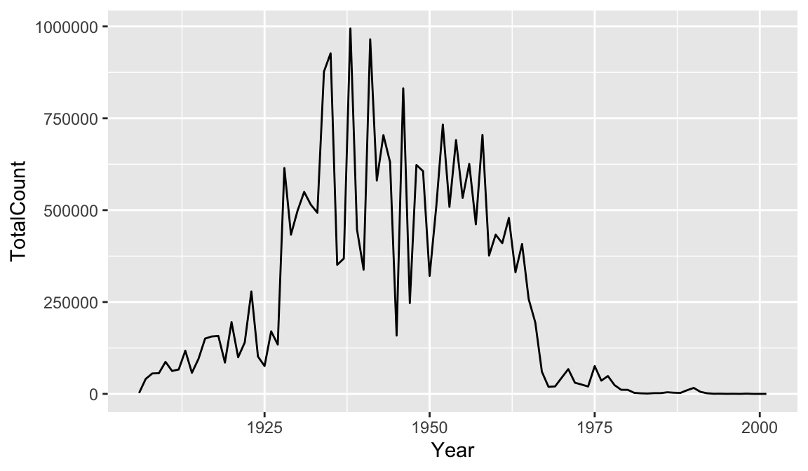
Is the same as
ggplot(data=yearly_rates_ext)4.5 Univariate plots
4.5.1 Histograms
One of the simplest graphs we can make is a histogram. We use histograms to see the distribution of a single continuous variable. Let’s build a histogram to look at the distribution for our rate variable.
First, we define a mapping (using the aesthetic (aes) function), by selecting the variables to be plotted and specifying how to present them in the graph, e.g. as x/y positions or characteristics such as size, shape, color, etc. Here we will say that the x axis should contain the rate variable. Note how the x-axis populates with some numbers and tick marks.
yearly_rates_ext %>%
ggplot(aes(x=rate))
This can also be written more concisely:
yearly_rates_ext %>%
ggplot(aes(rate))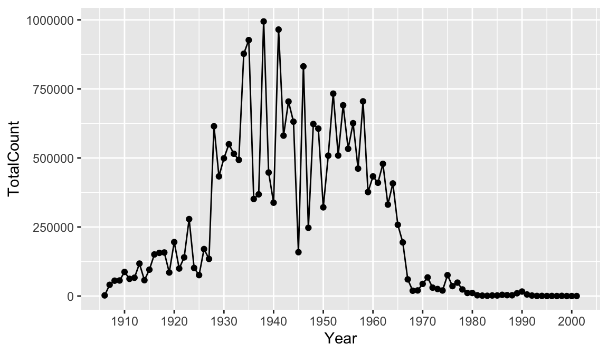
Next we need to add ‘geoms’ – graphical representations of the data in the plot (points, lines, bars). ggplot2 offers many different geoms for common graph types. To add a geom to the plot use the + operator. Note to that you can save plots as objects.
rate_hist <-
yearly_rates_ext %>%
ggplot(aes(x=rate)) +
geom_histogram()
rate_hist## `stat_bin()` using `bins = 30`. Pick better value with `binwidth`.## Warning: Removed 100 rows containing non-finite values (stat_bin).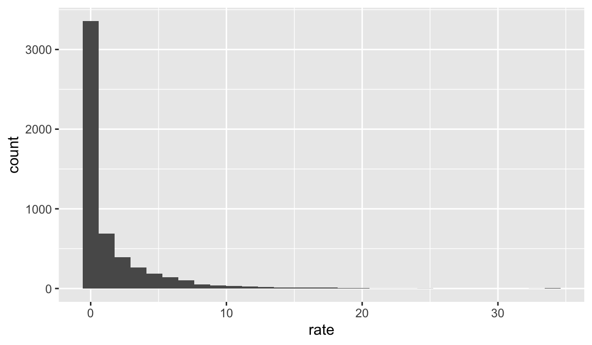
One of the characteristics of a histogram is the bins into which the data falls. We can manipulate these bins with the binwidth argument.
rate_hist <-
yearly_rates_ext %>%
ggplot(aes(x=rate)) +
geom_histogram(binwidth = 2)
rate_hist## Warning: Removed 100 rows containing non-finite values (stat_bin).
4.6 Bivariate Plots
4.6.1 Line graphs
Another basic graph type is a line graph. Line graphs are useful for looking at evolution in a variable over time. We can build a line graph to see how measles case counts fluctuated over the 20th century. To do this, we will have to group our data so that there is one row per year. Luckily, since ggplot2 is part of the tidyverse, we can easily link together data transformation and graphing in one step.
yearly_rates_ext %>%
group_by(Year) %>%
summarize(TotalCount = sum(TotalCount))## # A tibble: 107 × 2
## Year TotalCount
## <dbl> <dbl>
## 1 1900 0
## 2 1901 0
## 3 1902 0
## 4 1903 0
## 5 1904 0
## 6 1905 0
## 7 1906 2345
## 8 1907 40199
## 9 1908 54471
## 10 1909 49802
## # … with 97 more rows
## # ℹ Use `print(n = ...)` to see more rowsWe pipe to ggplot() and assign Year to the x-axis and TotalCount to the y-axis with the aes() function. The canvas and axes are ready.
yearly_rates_ext %>%
group_by(Year) %>%
summarize(TotalCount = sum(TotalCount)) %>%
ggplot(aes(x=Year, y=TotalCount))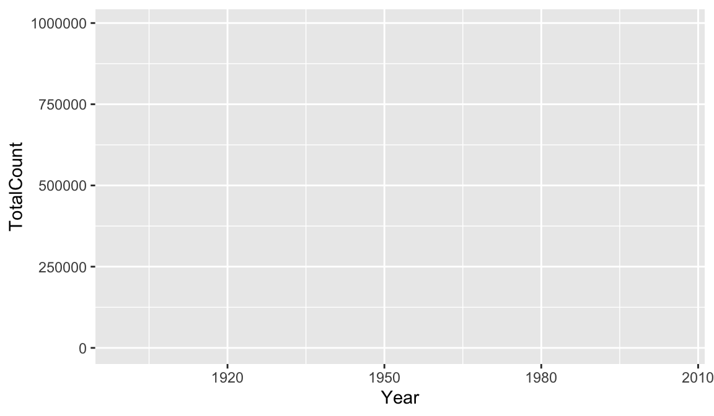
Now we can add a geom layer to add our line. Let’s also be sure to save our work to an object.
year_total_line <- yearly_rates_ext %>%
group_by(Year) %>%
summarize(TotalCount = sum(TotalCount)) %>%
ggplot(aes(x=Year, y=TotalCount)) +
geom_line()
year_total_line
It might be nice to see where each data point falls on the line. To do this we can add another geometry layer.
year_total_line <- yearly_rates_ext %>%
group_by(Year) %>%
summarize(TotalCount = sum(TotalCount)) %>%
ggplot(aes(x=Year, y=TotalCount)) +
geom_line() +
geom_point()
year_total_line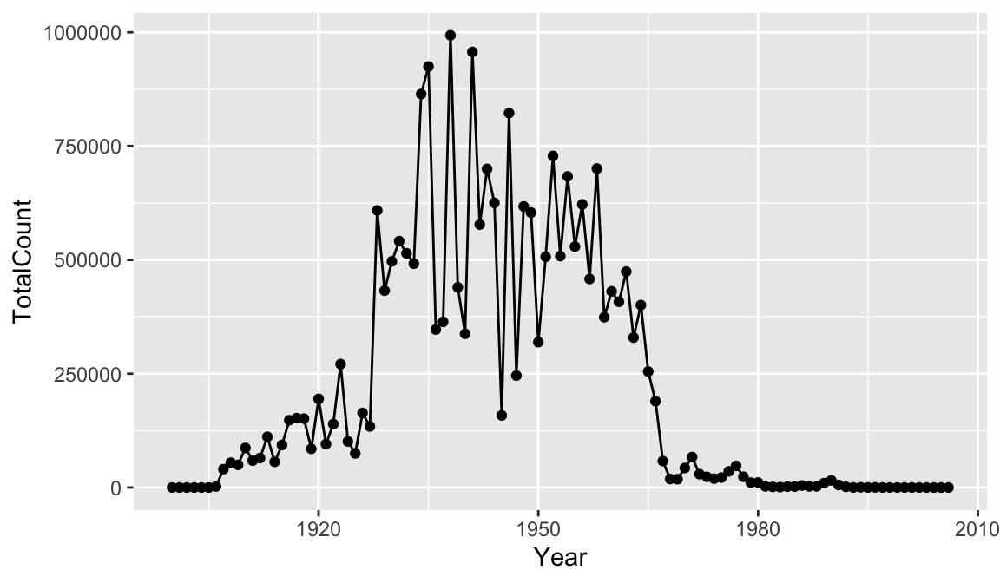
The + in the ggplot2 package is particularly useful because it allows you to modify existing ggplot objects. This means you can easily set up plot templates and conveniently explore different types of plots, so the above plot can also be generated with code like this:
year_total_line <- year_total_line + geom_point()
There are many ways to customize your plot, like changing the color or line type, adding labels and annotations. One thing that would make our graph easier to read is tick marks at each decade on the x-axis. There are a number of functions in ggplot2 for altering the scale. We want to alter the x-axis scale, which holds continuous data, so we can use the scale_x_continuous() function. Note that when you start to write the name of the function, RStudio will supply you with other similarly named functions.
scale_x_continuous() has an argument called breaks which allows you to alter where the axis tick marks occur. We can use that together with seq() to say put a tick mark every 10 places between 1900 and 2000.
year_total_line <- yearly_rates_ext %>%
group_by(Year) %>%
summarize(TotalCount = sum(TotalCount)) %>%
ggplot(aes(x=Year, y=TotalCount)) +
geom_line() +
geom_point() +
scale_x_continuous(breaks = seq(from=1900, to=2000, by=10))
year_total_line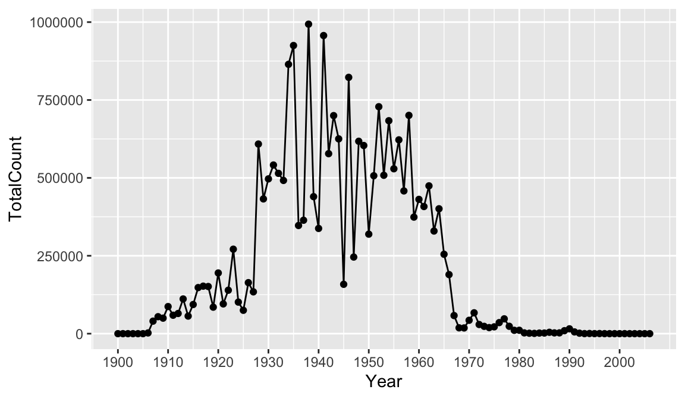
Now we can move beyond basic exploration and start to use our graph to analyze and tell stories about our data. One important trend we might notice, is the sharp decrease in cases in the 1960s. The measles vaccine was introduced in 1963. We can use our visualization to tell the story of the vaccine’s impact.
Let’s drop a reference line at 1963 to clearly indicate on the graph when the vaccine was introduced. To do this we add a geom_vline() and the annotate() function. There are multiple ways of adding lines and text to a plot, but these will serve us well for this case. Note that you can change features of lines such as color, type, and size. We can supply coordinates to annotate() to position the annotation where we want.
year_total_line <- yearly_rates_ext %>%
group_by(Year) %>%
summarize(TotalCount = sum(TotalCount)) %>%
ggplot(aes(x=Year, y=TotalCount)) +
geom_line() +
geom_point() +
scale_x_continuous(breaks = seq(from=1900, to=2000, by=10)) +
geom_vline(xintercept = 1963, color = "red", linetype= "dashed") +
annotate(geom = "label", x=1963, y=800000, label="1963: vaccine introduced")
year_total_line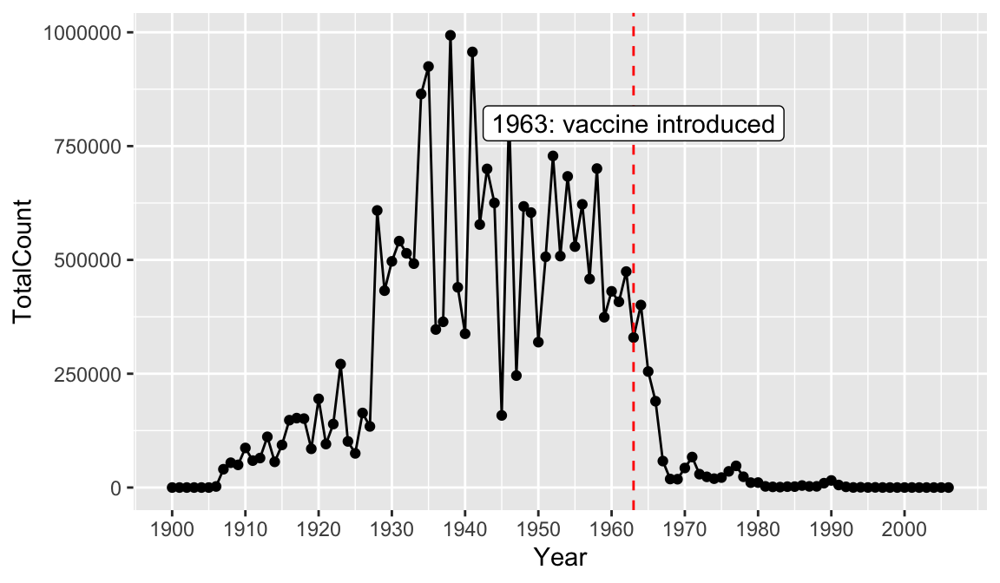
Color names in R
How did I know R would understand the word “red” for the line color? R has 657 built-in color names. You can call the function colors() to see all of them. Also check out this neat chart of the R colors, names, and equivalent hex codes.
Finally, let’s add a title and axis labels to our plot with the labs() function. Note that axis labels will automatically be supplied from the column names, but you can use this function to override those defaults.
year_total_line <-
yearly_rates_ext %>%
group_by(Year) %>%
summarize(TotalCount = sum(TotalCount)) %>%
ggplot(aes(x=Year, y=TotalCount)) +
geom_line() +
geom_point() +
scale_x_continuous(breaks = seq(from=1900, to=2000, by=10)) +
geom_vline(xintercept = 1963, color = "red", linetype= "dashed") +
annotate(geom = "label", x=1963, y=800000, label="1963: vaccine introduced") +
labs(title = "Measles Cases Decrease After Vaccine Introduced", x = "Year", y = "Total Measles Case Count")
year_total_line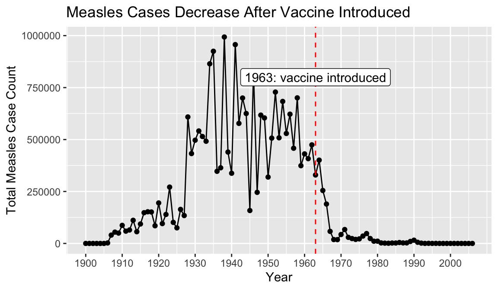
Now, we have a pretty nice looking graph. Finally, let’s save our plot to a png file, so we can share it or put it in reports. To do this we use the function called ggsave().
ggsave("figures/yearly_measles_count.png", plot = year_total_line)4.6.2 Bar charts
Let’s zoom in now and take a closer look at our data for 1963, and compare the measles incidence rate per 1000 persons in each state. To compare a categorical variable (state) and a numeric variable(rate) a bar chart is a good choice.
yearly_rates_ext %>%
filter(Year==1963) %>%
ggplot(aes(x=state, y=rate)) +
geom_bar(stat = "identity")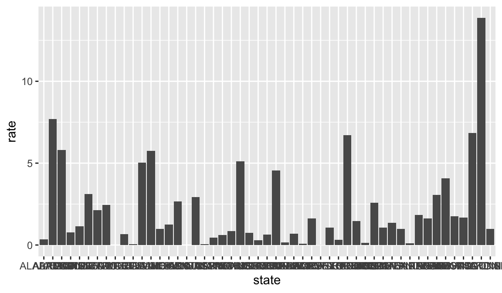
Right away we notice a big flaw in our visualization. We have so many bars it is impossible to see the axis labels! There are a couple of ways we can fix this, which we will come back to in a moment.
Additionally, it can be more visually impacting to have our bars sorted in order. Let’s take care of that first, and then come back to the label issue. We will do this with the reorder() function. This function takes two arguments: the variable to reorder, and the variable which contains the values to reorder by. A negative sign - before the name of the second variable will sort in decreasing order.
yearly_rates_ext %>%
filter(Year==1963) %>%
ggplot(aes(x=reorder(state, -rate), y=rate)) +
geom_bar(stat = "identity")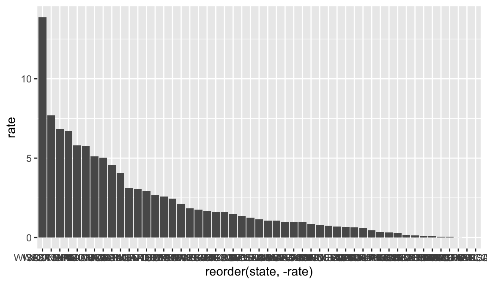
Now, let’s make it easier to read the names of the states. First we can change the angle of the axis text with the theme() function, and the axis.text.x argument.
yearly_rates_ext %>%
filter(Year==1963) %>%
ggplot(aes(x=reorder(state, -rate), y=rate)) +
geom_bar(stat = "identity") +
theme(axis.text.x = element_text(angle=90))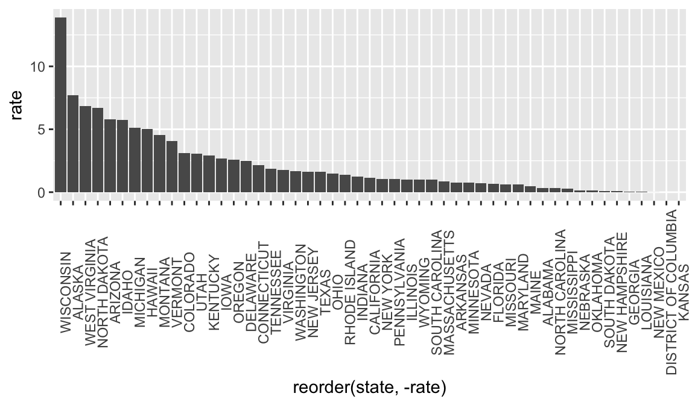
You can play around with adjusting the angle of the text too. Instead of 90, try 45. Or how about, -45!
Now, we can see the name of each state, but it really is much easier to read horizontal than vertical text. So, another solution is to flip the whole graph so we have horizontal text and bars, instead of vertical. For this
yearly_rates_ext %>%
filter(Year==1963) %>%
ggplot(aes(x=reorder(state, rate), y=rate)) +
geom_bar(stat = "identity") +
coord_flip()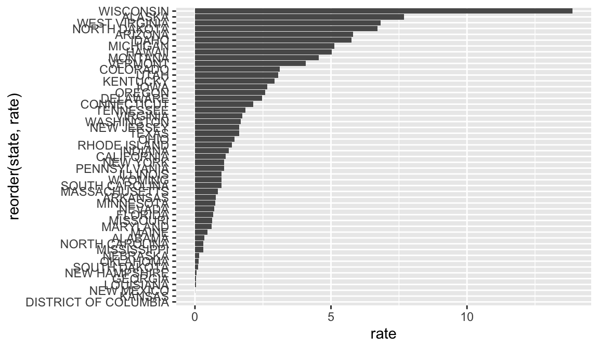
The text is still a little hard to read because it is so close together and almost overlapping. We can fine-tune this a little more by changing the text size. We can also reduce some of the noise from the grid lines by choosing a different theme. If you haven’t already, be sure to save your plot to an object.
bar_rate_1963 <- yearly_rates_ext %>%
filter(Year==1963) %>%
ggplot(aes(x=reorder(state, rate), y=rate)) +
geom_bar(stat = "identity") +
coord_flip() +
theme_classic() +
theme(axis.text.y = element_text(size = 6))
bar_rate_1963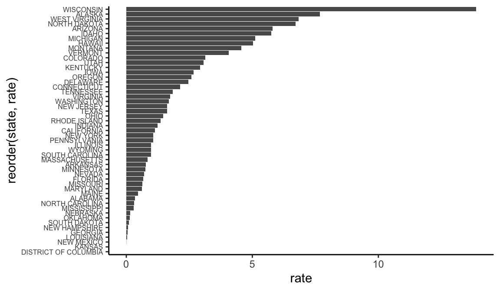
We could add a reference line to this as well to show which states are below and above average. In the previous example, we hard coded our reference line to a particular number. But we can set it to a calculation instead - in this case, the mean rate of measles.
Note that even though the line is vertical, we have to use geom_hline(), because we flipped the coordinates of our graph. Remember that lines have attributes size, shape, and linetype that can all be adjusted.
bar_rate_1963 <- yearly_rates_ext %>%
filter(Year==1963) %>%
ggplot(aes(x=reorder(state, rate), y=rate)) +
geom_bar(stat = "identity") +
geom_hline(yintercept = mean(yearly_rates_ext$rate, na.rm = TRUE), color="red", linetype="dotted", size=1.5) +
coord_flip() +
theme_classic() +
theme(axis.text.y = element_text(size = 6)) + annotate(geom = "text", y=3, x=20, label="mean rate")
bar_rate_1963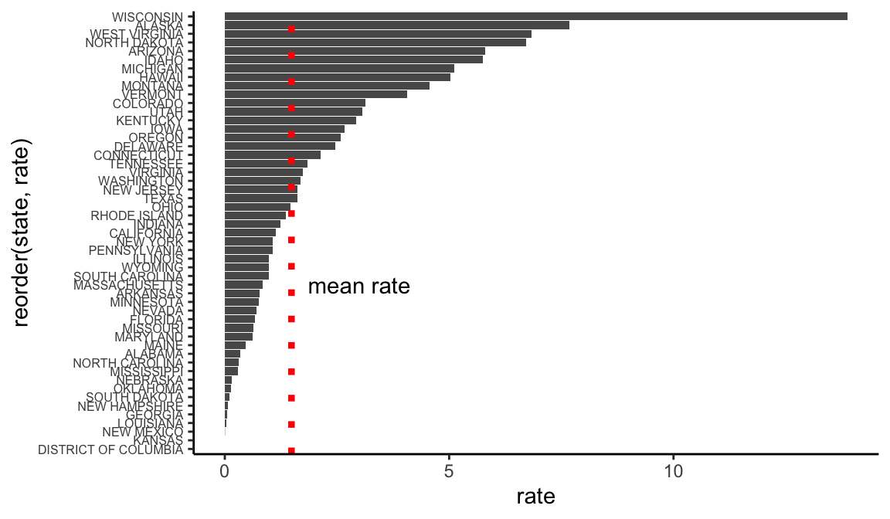
4.7 Maps
While we were successful at creating a bar chart to compare measles rates in each state, it is often more helpful to use a map to visualize geographic data. There are multiple types of map-based visualizations in R and tools for creating them. While it is possible to make interactive and animated maps in R, in this lesson, we will only cover static maps.
In this lesson, we will focus on creating choropleths. Despite the funny name, this is a visualization you have likely seen many many times. A choropleth is a map that links geographic areas or boundaries to some numeric variable.
ggplot2 needs a little help to make map visualizations. Depending on the geographies you want to map, you may need to find geoJSON or shapefiles. There are also several packages in R that come pre-loaded with background maps of common geographies. We’ll be using one in this lesson called usmap. There are several advantages to this package:
- It contains maps of the US with both state and county boundaries.
- You can create maps based on census regions and divisions. 3. Alaska and Hawaii are included, while many map packages only have a map of the continental US.
- It creates the map as a
ggplot2object, so you can customize the visualization withggplot2functions (i.e. the things you’ve been learning in this lesson!)
We’ve installed usmap in your RStudio Cloud project, so now let’s load it into our session.
library(usmap)The main function in this package is plot_usmap. When you call it without any arguments, you get the background map of the US.
plot_usmap()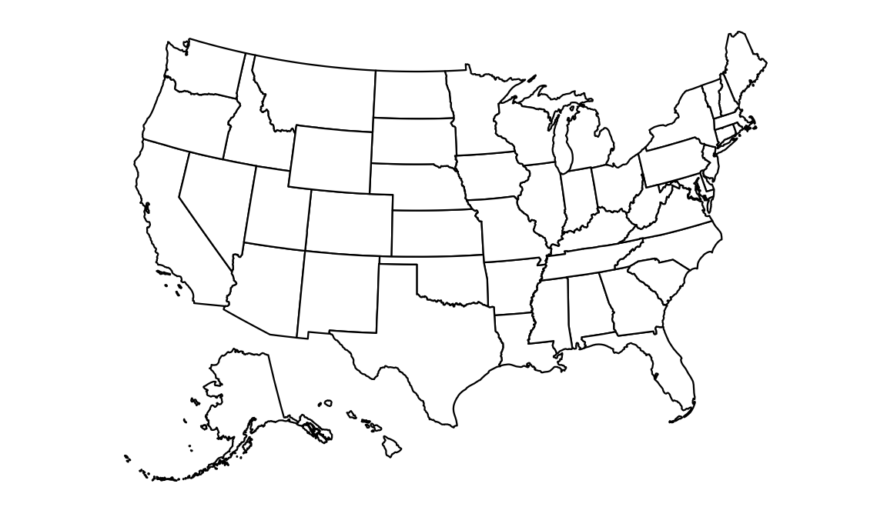
By default it shows state boundaries, but we could also ask it to show county boundaries
plot_usmap(regions="counties")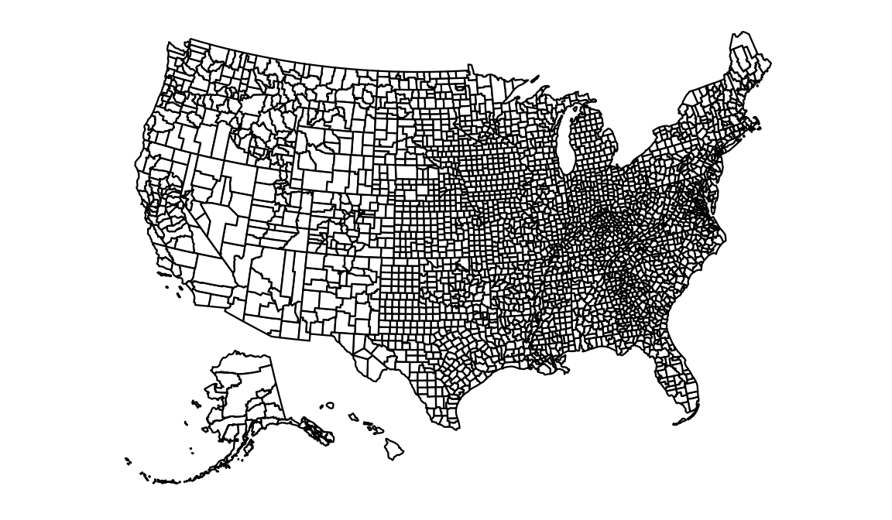
Since we do not have that level of data in our dataset, we’ll use the default option. There are two required arguments to plot_usmap().
- The first is a data frame specified with the
dataargument. This data frame must have a column calledstateorfipswhich contains state names or FIPS (Federal Information Processing) codes. FIPS codes must be used for county level data. This data frame must also have a column of values for each state or FIPS. - The second argument is the name of the column that contains the values, specified by the
valueargument.
Let’s first create a data frame with just our 1963 data.
measles1963df <- yearly_rates_ext %>%
filter(Year==1963)Now let’s plot our data with plot_usmap(). Remember it’s important to use rate here rather than our raw count numbers since we are dealing with areas of vastly different populations.
plot_usmap(data=measles1963df, values = "rate")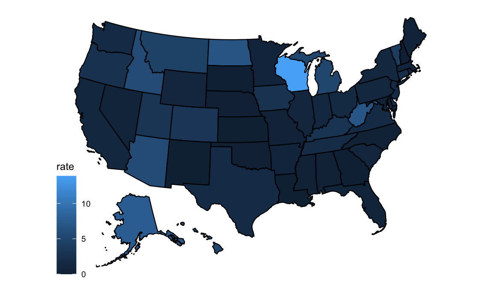
We are provided with a default color scheme, but we can adjust this. Before we do though, it’s worth talking a little about some considerations for using color in visualizations. Color can make a huge difference to the effectiveness of your visualization, and it’s important to think carefully about your choices. For example, in our default color palette, many of the shades are pretty dark, and it is hard to visually distinguish among them. When choosing a palette, you want to be sure shades can be easily distinguished from one another. Also, choose palettes that are color-blind friendly and would hold up well if you visualization was printed in greyscale.
R has many, many color palettes available from a variety of packages10, including palettes inspired by everything from scientific journals11 to Wes Anderson movies12 to Beyonce13! If that’s not enough, it’s also possible to build your own palettes with hex codes or R’s built-in color names.
One popular palette package is the viridis14 package. viridis palettes are often used for their attractiveness, ease of perception by those with different forms of color blindness, and ability to be viewed in grey scale. Let’s try adding the viridis palette to our map.
We’ve installed viridis in your Rstudio Cloud project. Let’s load it into our session.
library(viridis)## Loading required package: viridisLiteviridis is integrated with ggplot2, and our map is a ggplot object, we can call the function scale_fill_viridis and add it to our plot.
plot_usmap(data=measles1963df, values = "rate") +
scale_fill_viridis()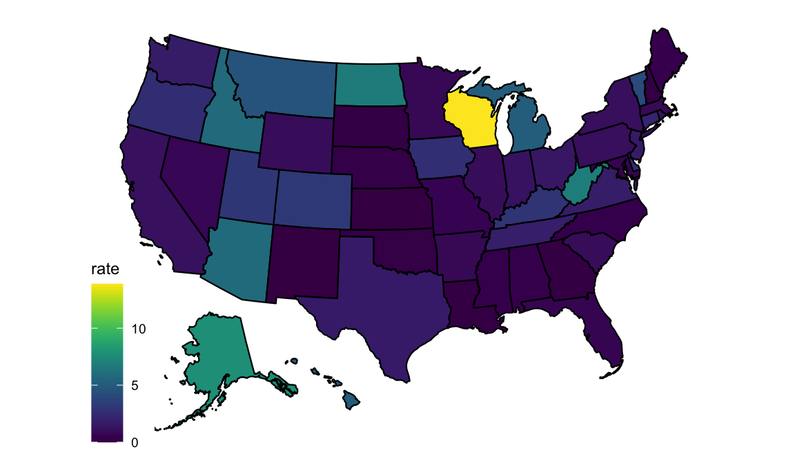
Note how the brighter areas seem to highlight the areas of greater concern.
If you prefer the darker colors to represent higher rates, and lighter to represent lower, we can switch the direction of the palette with the direction argument.
plot_usmap(data=measles1963df, values = "rate") +
scale_fill_viridis(direction = -1)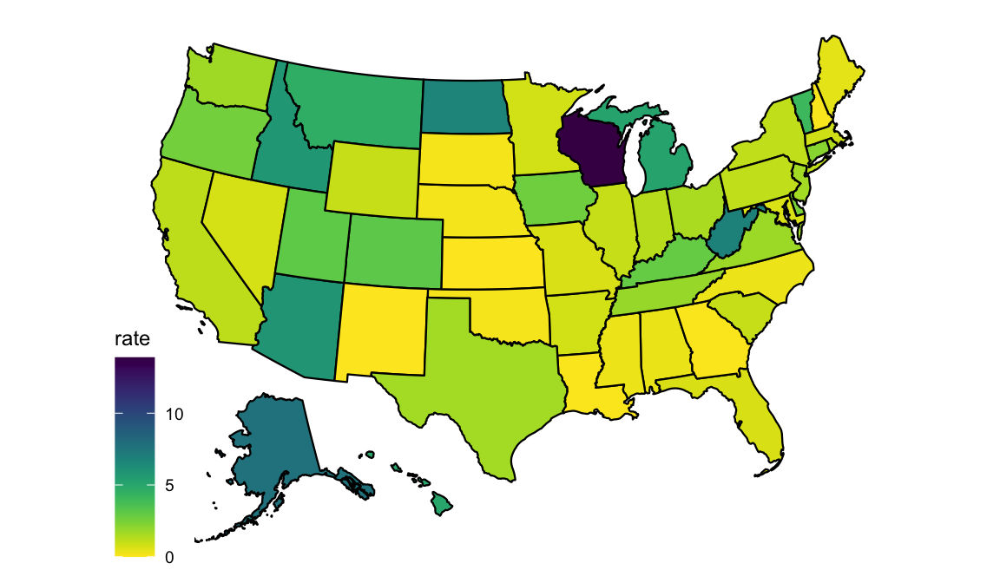
Let’s try another of the viridis palettes.
plot_usmap(data=measles1963df, values = "rate") +
scale_fill_viridis(option = "rocket", direction = -1) 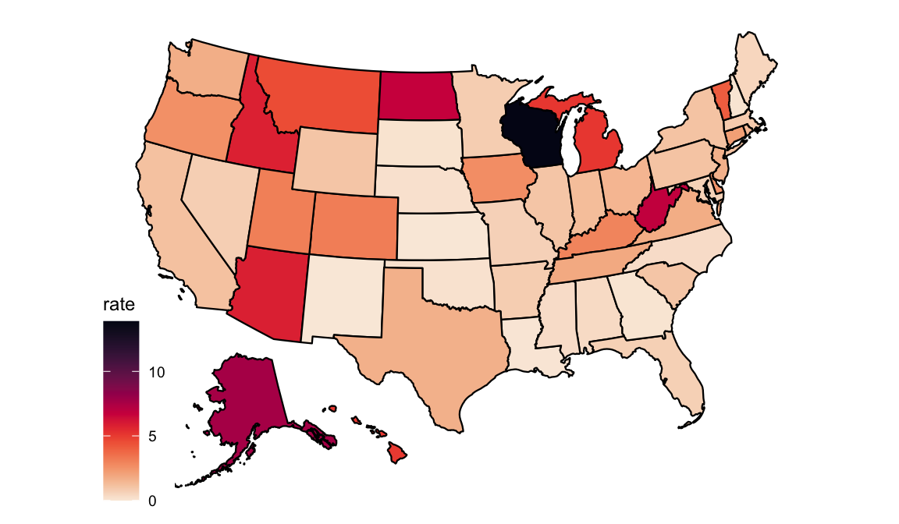
Let’s add a title, assign to an object, and save to a png file.
map_1963 <- plot_usmap(data=measles1963df, values = "rate") +
scale_fill_viridis(option = "rocket", direction = -1) +
labs(title = "Incidence Rate of Measles per 1000 people in 1963")
ggsave(filename = "figures/map_1963.png", plot = map_1963, bg = "white")4.8 Grouping and Faceting
So far we’ve looked at visualizations with one or two variables. But sometimes, we want to include a third variable, or compare different groups or levels of a variable. For example, the bar chart and map we made allow us to compare all states, but for only one year. The line graph lets us see all years, but just one national total and not individual states? How can we easily compare data for multiple states in multiple years? This is where ggplot2 facetting abilities come in handy.
Facets let you split your graph into multiple smaller graphs arranged in a grid layout. This sort of visualization is often called “small multiples”, and is often a useful way of reducing visual clutter. Let’s use faceting to make small maps that let us compare measles rates in the five years prior to the vaccine being introduced.
First, it will be helpful to create a data frame of just the years we are interested in.
measles_pre_vacc <- yearly_rates_ext %>%
filter(between(Year, 1958, 1963))Now let’s map this data frame the way we did in the Maps section, but we’ll add a layer with the facet_wrap() function.
pre_vacc_maps <- plot_usmap(data = measles_pre_vacc, values = "rate") +
facet_wrap(~Year) +
scale_fill_viridis(option = "rocket", direction = -1)
pre_vacc_maps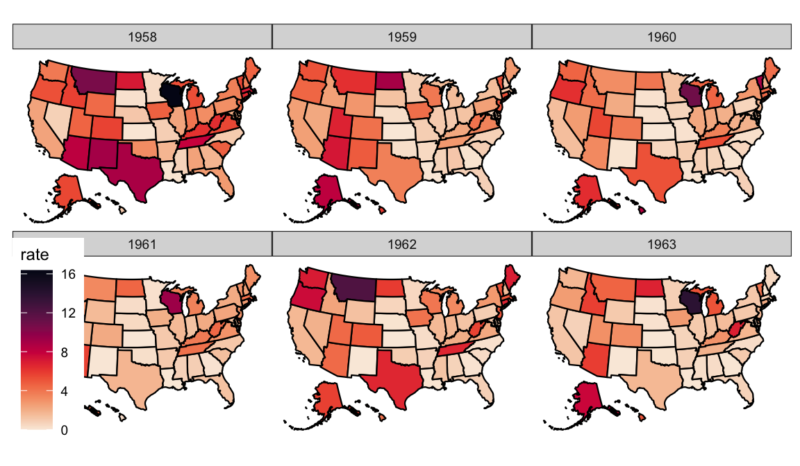
We could also use highlighting to do away with noise in a line graph. First create a new data frame.
regional_rates <- yearly_rates_ext %>% filter(state.division=="South Atlantic" & between(Year, 1950, 1980))Then we can create two geom_line layers and highlight just the one in the facet.
tmp <- regional_rates %>%
mutate(state2=state)
tmp %>%
ggplot(aes(x=Year, y=rate)) +
geom_line(data=tmp %>% dplyr::select(-state), aes(group=state2), color="grey", size=0.5, alpha=0.5) +
geom_line(aes(color=state), color="#69b3a2", size=1.2 ) +
scale_x_continuous(breaks=seq(from=1950, to=1980, by=5)) +
scale_color_viridis() +
theme_minimal() +
theme(
legend.position="none",
plot.title = element_text(size=14),
panel.grid = element_blank()
) +
ggtitle("A comparison of measles cases in the South Atlantic Region") +
facet_wrap(~state, ncol = 2)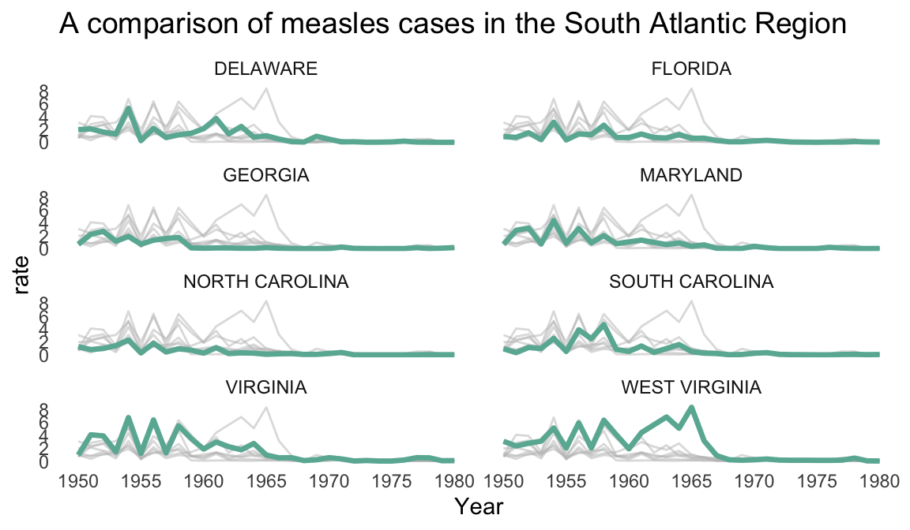
The
paletteerpackage attempts to keep track of as many as possible: https://github.com/EmilHvitfeldt/paletteer#included-packages↩︎https://cran.r-project.org/web/packages/viridis/vignettes/intro-to-viridis.html↩︎